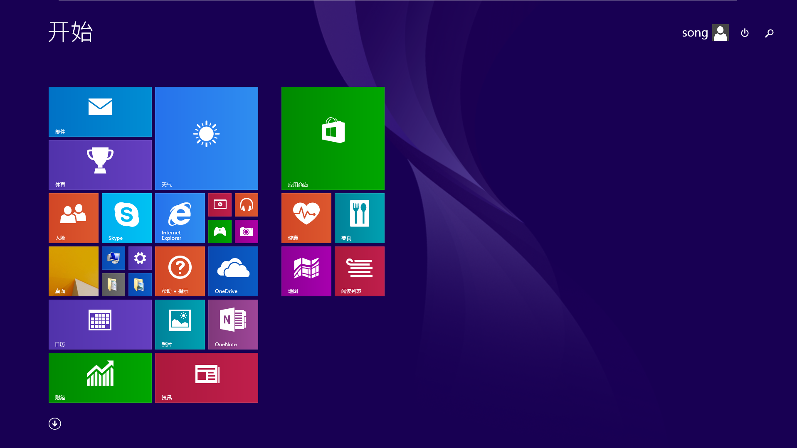

window8.1 64位
文件名：cn_windows_8.1_professional_vl_with_update_x64_dvd_4050293.iso
SHA1：BD1B866707D07C6A460E6AD6E1124782F16ABC60
发布时间：2014-04-08
大小：3.85GB
ed2k://|file|cn_windows_8.1_professional_vl_with_update_x64_dvd_4050293.iso|4136626176|4D2363F9E06BFD50A78B1E6464702959|/
window8.1 32位
文件名：cn_windows_8.1_professional_vl_with_update_x86_dvd_4048630.iso
SHA1：FECD698316EB602A566FCF7F1F2172BFF9BC7713
发布时间：2014-04-08
大小：2.87GB
ed2k://|file|cn_windows_8.1_professional_vl_with_update_x86_dvd_4048630.iso|3086659584|41CAAB5DAC5643F6E0048576D609C19A|/